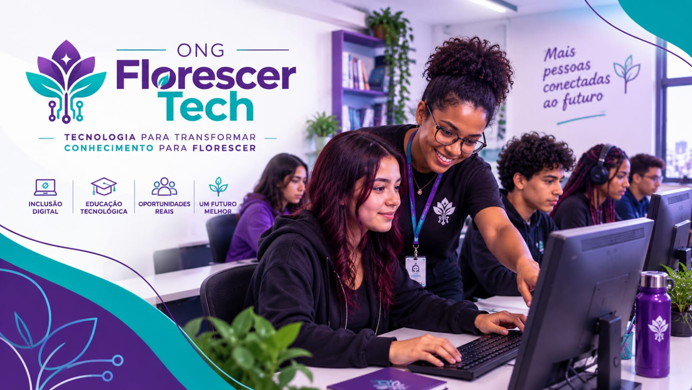

Inclusão Digital
Promovemos atividades que ajudam pessoas a desenvolver conhecimentos básicos sobre computadores, internet e ferramentas digitais.

Conheça algumas das iniciativas da Florescer Tech voltadas para a inclusão e capacitação digital.

Promovemos atividades que ajudam pessoas a desenvolver conhecimentos básicos sobre computadores, internet e ferramentas digitais.
Oferecemos cursos voltados ao aprendizado de ferramentas digitais e conhecimentos essenciais para o dia a dia.
Realizamos oficinas para apresentar diferentes áreas da tecnologia e estimular o interesse pelo aprendizado.
Desenvolvemos atividades que auxiliam os participantes a adquirir conhecimentos digitais para estudo e preparação para o mercado de trabalho.